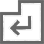
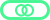

HowToPlay
Cos'è Breakout
Breakout è un gioco arcade, remake dell'omonimo gioco del 1976 realizzato da Atari.
Scopo del gioco
Il gioco è composto da 5 livelli nei quali il giocatore deve riuscire a rompere tutti i mattoncini presenti(quelli distruttibili) tramite una o più palle.
Il giocatore può muovere una barra a destra e sinistra per far rimbalzare le palle ed evitare di perderle.
Infatti se una palla attraversa la parte bassa dello schermo viene distrutta.
Se non rimangono più palle nell'area di gioco il giocatore perde una vita.
Se sul campo è presente più di una palla, la vita verrà persa quando l'ultima viene persa.
Alcuni mattoncini nascondono dei bonus che possono aiutare o penalizzare il giocatore durante il livello.
Durante la partita il giocatore acquisirà un punteggio che sarà memorizzato in una classifica a fine partita, cioè quando si perdono tutte le vite o si finiscono tutti i livelli.
I punti si ottengono tramite:
-mattoncini: ogni mattoncino distrutto dà punti in base alla velocità della palla (più è veloce più punti vale)
-bonus/malus: ogni bonus o malus raccolto vale 150 punti
Comandi
-
muovi la barra
-
lancia la palla
-

lancia la palla / metti in pausa il gioco
Bonus/Malus
-

riduce la dimensione della barra
-
aumenta la dimensione della barra
-

sdoppia tutte le palline in gioco
-
velocizza il movimento delle palline
-
rallenta il movimento delle palline
-
il giocatore riceve una vita extra